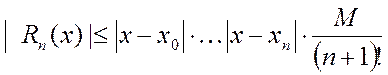

Різниця називається залишковим членом інтерполяційної формули.
Похибка многочленної інтерполяції
Коли відомим є аналітичний вираз інтерпольованої функції  , можна застосовувати формули для оцінки похибки інтерполювання (похибки методу).
, можна застосовувати формули для оцінки похибки інтерполювання (похибки методу).
Різниця називається залишковим членом інтерполяційної формули.
В силу ясності інтерполяційного многочлена для фіксованого відрізка інтерполювання, формула похибки може використовуватися як для інтерполяційного многочлена Лагранжа, так і для інтерполяційного многочлена Ньютона.
Оцінка похибки виконується за формулою
 де